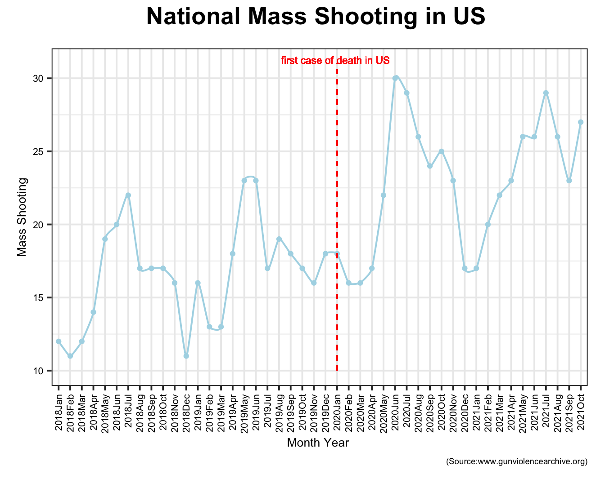
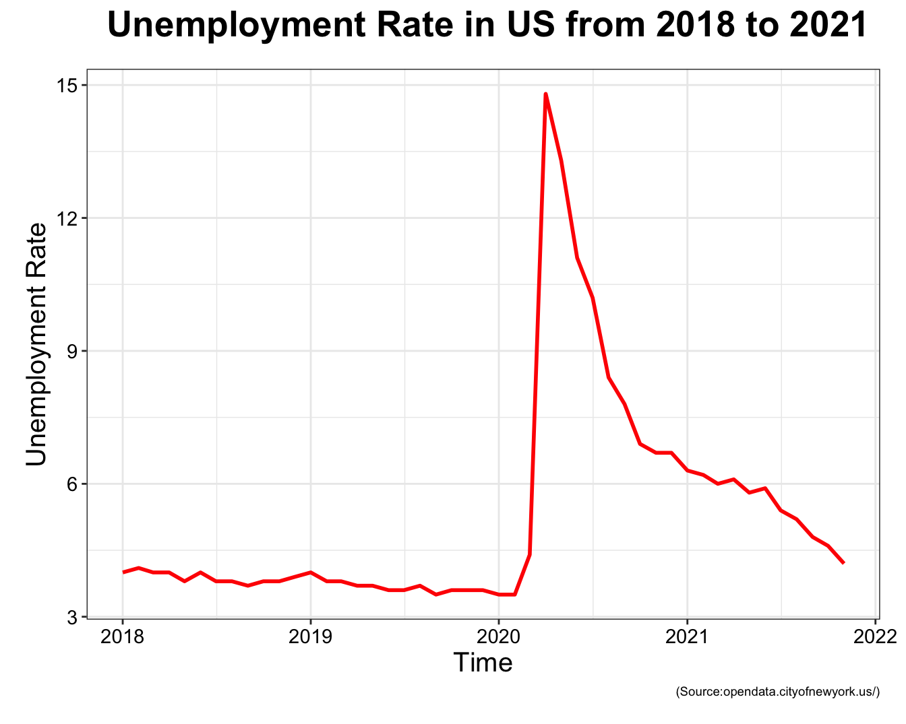

gun_violence_state_df=
read_csv("data/gun violence/mass shootings(all years).csv") %>%
janitor::clean_names() %>%
select(-incident_id,-address,-operations) %>%
separate(incident_date,into=c("day","month","year"),sep="-") %>%
group_by(state,year) %>%
mutate(number_year_killed=sum(number_killed),number_year_injured=sum(number_injured),year=as.numeric(year)) %>%
ungroup() %>%
filter(year!="17") %>%
mutate(year=year+2000) %>%
select(-city_or_county)## Rows: 2000 Columns: 8## ── Column specification ────────────────────────────────────────────────────────
## Delimiter: ","
## chr (5): Incident Date, State, City Or County, Address, Operations
## dbl (3): Incident ID, # Killed, # Injured##
## ℹ Use `spec()` to retrieve the full column specification for this data.
## ℹ Specify the column types or set `show_col_types = FALSE` to quiet this message.year_month_state_massshooting=
gun_violence_state_df %>%
group_by(year,month,state) %>%
mutate(number_mass_shooting=n()) %>%
group_by(year,month,state,number_mass_shooting) %>%
summarise() %>%
mutate(year_month=str_c(year,month,sep="")) %>%
mutate(month=match(month,month.abb)) %>%
group_by(year) %>%
arrange(month) %>%
filter(year_month!="2021Nov")## `summarise()` has grouped output by 'year', 'month', 'state'. You can override using the `.groups` argument.year_month_state_massshooting %>%
mutate(year_month=fct_inorder(year_month)) %>%
group_by(year_month) %>%
count() %>%
rename(number_mass_shooting=n) %>%
ggplot(aes(year_month,number_mass_shooting)) + theme_bw(base_size=15 ) +
geom_xspline(aes(group=1),color="lightblue",size=0.7) + geom_point(color="lightblue",size=1.5) +
geom_segment(aes(x = 25, y = 10, xend = 25, yend = 29) ,size=1.3,colour = "lightblue",linetype="dashed") +
geom_text(aes(x=25, y= 30, label = "first case of death in US " ), colour = "red", vjust = -2, hjust = 0.5, size = 3) +
labs(x = "Month Year ", y = "Mass Shooting", title = "National mass shooting in US ",caption="(Source:www.gunviolencearchive.org)") + theme( plot.title = element_text(colour = "black", face = "bold",
size = 20, vjust = 3, hjust = 0.5), plot.margin = unit(c(0.2, 0.2, 0.2, 0.2), "inches"),axis.text=element_text(colour="black",size=8),axis.title=element_text(size=10)) + theme(axis.text.x = element_text(angle = 90, vjust = 0.5, hjust =1),plot.caption = element_text(size=7)) 
The plot above shows a fluctutation in national mass shooting number in US from January 2018 to October 2021. From the plot, we can reach two conclusions.First, there is a seasonal pattern in national mass shooting that in every year, basically, number of mass shooting will begin to increase from January and reach its peak in summer and then reduce to bottom. Second, 2020 saw a huge increase in mass shootings compared with previous years, and 2021 is trending a little lower. After data processing in R, there is nationally mass shootings jumped nearly 50% during a pandemic with crippling unemployment, violent protests and idle youth.
mass_shooting_state=
gun_violence_state_df %>%
group_by(state) %>%
count() %>%
select(number_mass_shooting=n) %>%
arrange(number_mass_shooting) %>%
mutate(Number=number_mass_shooting)## Adding missing grouping variables: `state`mass_shooting_state %>%
ggplot(aes(x=fct_reorder(state,number_mass_shooting),y=number_mass_shooting,fill=Number)) + geom_bar(stat = "identity", colour = "black",position = "dodge") + theme_bw( ) +
theme(axis.text.x = element_text(angle = 90, vjust = 0.5, hjust =1))+ labs(y= "Mass Shooting", x = "State",title="Top States with highest \n number of Mass Shooting",caption="(Source:www.gunviolencearchive.org)") + theme( plot.title = element_text(colour = "black", face = "bold",
size = 15, vjust = 3, hjust = 0.5), plot.margin = unit(c(0.2, 0.2, 0.2, 0.2), "inches"),axis.text=element_text(colour="black",size=3)) + theme(axis.text.x = element_text(angle = 90, vjust = 0.5, hjust =1,size=8),axis.text.y = element_text(size=8),axis.title=element_text(size=10),plot.caption = element_text(size=7)) 
We arrange 48 states in an ascending way according to the number of mass shooting from 2018 to 2021. As shown in the bar chart, top 8 states are Illinois, California, Texas, Florida, Pennsylvania, Louisiana, New York and Ohio respectively. As one of city in Illinois, Chicago Leads the nation in mass shootings, averaging about one per week.